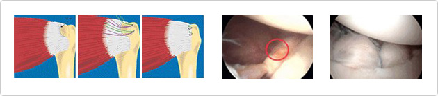

肩轴破裂
肩周肌肉中护着关节的4个肌肉就是肩轴肌肉。
肩轴疾病包括所有造成成人肩膀慢性疼痛的肩轴炎、肩轴退化或破裂引发的症状。

治疗方法
保存治疗主要包括非甾体类消炎药、注入甾族化合物药剂以及物理治疗。在保存治疗期间，不诱发症状的日常活动是可以的，但是由于不能再刺激肩轴的功能，所以应停止一些引发疼痛的行为或活动，并开始做有助于肩轴功能恢复的运动治疗。如果治疗几个月也没有好转的话，就要考虑做手术了。